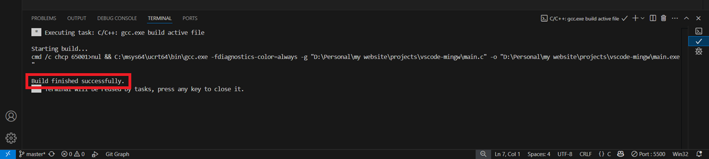
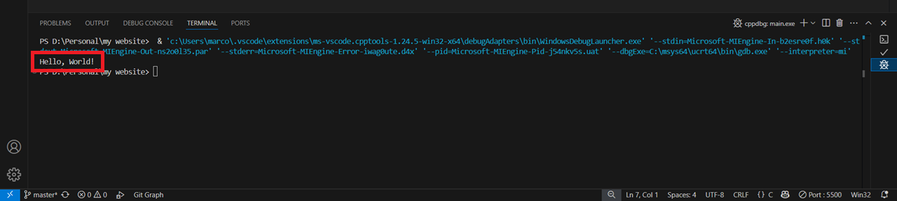

Visual Studio Code with GCC and MINGW
Setting up VS Code
Installing the MINGW toolchain
Running Our First Lines of Code
Now that we finally have our VS Code environment set up, we can start coding. The first thing you should always do before starting any code is to make a simple program that prints "Hello, World!" to the console. In this case we will use C. When you are ready, make a new main.c file and copy and paste the following code into it.
#include <stdio.h>
int main() {
printf("Hello, World!\n");
return 0;
}
Once you save the file, now try finding the play button in the top right corner of the screen, click the dropdown and click on the option Run C/C++ File. Then, when prompted, you will select C/C++ gcc.exe build and debug active file from the search bar at the top of the window.
After you select that, your terminal will opn and start running some compile scripts. You dont need to worry abou tany of them it tells you if your file compiled succesfully. If it doesnt say it compiled succesfully, then you have an Error in your code. If you go back to the terminal tab, it should have printed "Hello, World!
 Congratulations, You have just run your first file with Visual Studio code!